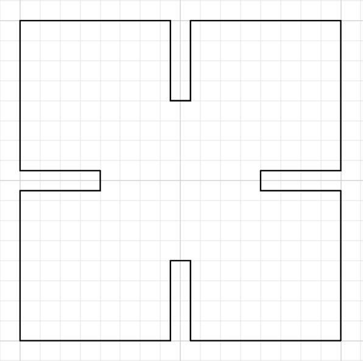
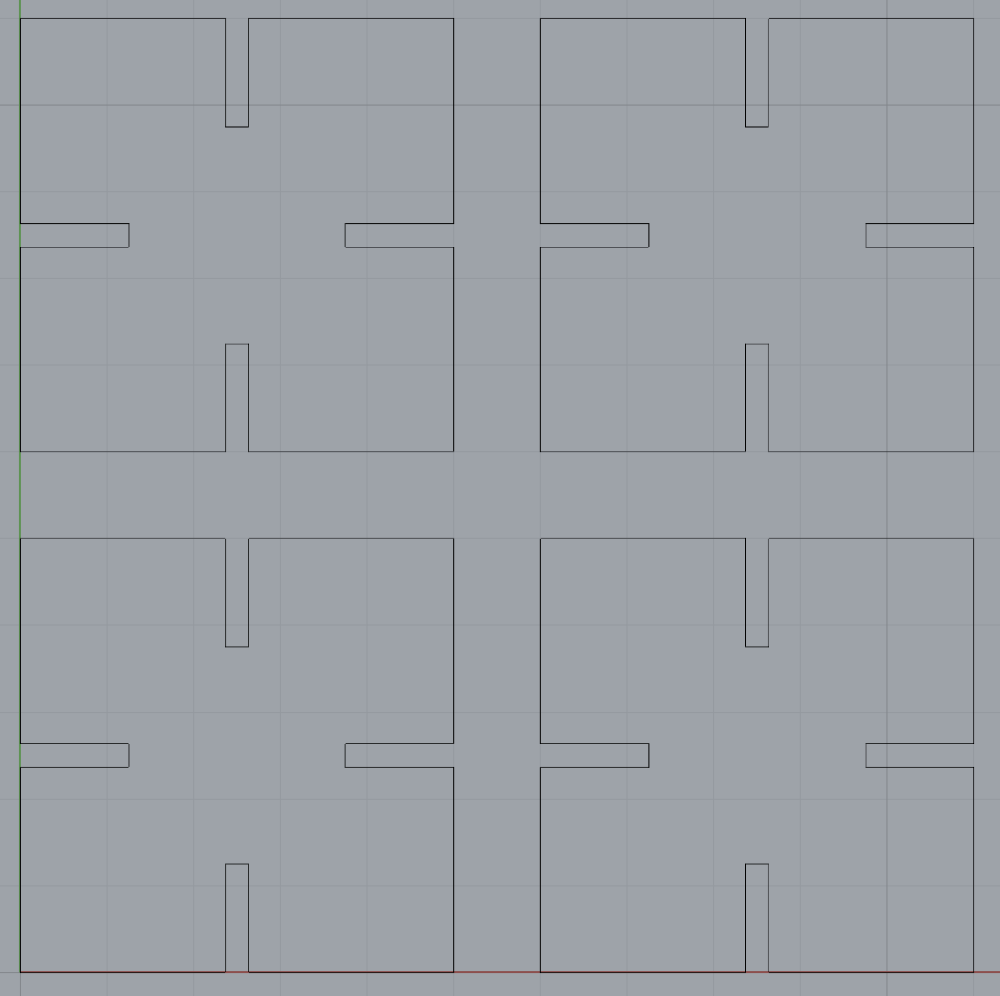
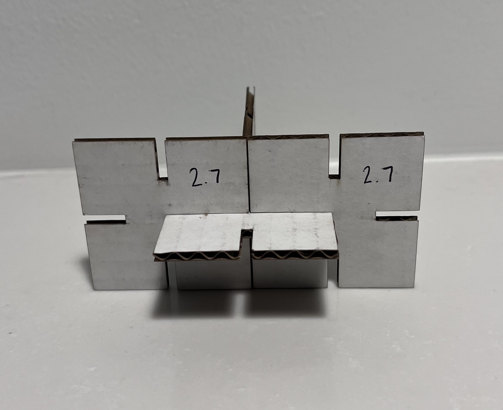
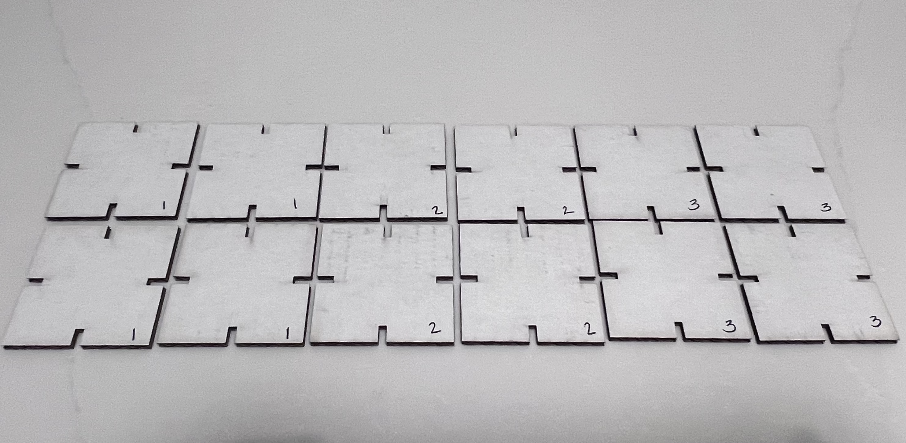

Assignment 1: Modelling and Laser Cutting!
Jessica Douma | HCDE 533 | Autumn 2022

For this assignment, we were tasked with laser cutting 30 press fit construction pieces that could be used together to form a structure that could withstand light shaking. Being completely new to Rhino (or any 3D computer software for that matter) and heeding Nadya’s advice to start simple, I decided to go with a straightforward model that would get me familiar with using Rhino but would leave ample time for the actual laser cutting and troubleshooting.

I started by constructing my model in Adobe Illustrator – it was a tool I was more familiar with and therefore less intimidated by. I started with 2”x2” squares to make the math easy and designed my four insertion slots to be .5” deep and .125” wide (the exact thickness of my cardboard taken from the online listing’s product spec) and imported my design to Rhino.

After attending Junchao's office hours, I realized that part of this assignment was intended to familiarize ourselves with Rhino; a piece that I kind of bypassed by completing my design in AI. So, I recreated my model in Rhino, generated a couple instances of it for a test cut, and exported it to Adobe Illustrator to be used by the laser cutters at The Mill.
When I got to The Mill and verified my cardboard’s width with a caliper, I realized that I had misinterpreted the product specifications I based my design on, and that the thickness was incorrect. I updated the width of my insertion slots to be 2.7mm (the actual exact thickness of my cardboard) and converted my designs to the metric system per Junchao's suggestion.
Ready to cut, I asked the staff at The Mill to help me use the laser cutter. They showed me how to turn it on, focus it, configure my AI file for printing (i.e. adjusting the stroke weight), and how to send jobs to the printer and I chose the following settings for my first print: speed 30, power 100, frequency 50.

It worked! There were a couple tiny flames though, and so the staff and I were curious to see if we could better configure our settings. We tried three more test cuts with the following settings:
- Test 2: speed 80, power 20, frequency 50
- Test 3: speed 80, power 40, frequency 50
- Test 4: speed 30, power 80, frequency 50

Test 2 didn't actually cut through the cardboard. Tests 3 and 4 did successfully cut through the cardboard. The fourth configuration seemed to provide the best cut with the least number of flames so I settled on that one.

After assembling my test cuts, I realized a couple things:
- While the pieces could withstand gentle shaking, that was attributed to the depth of the insertion slots and the length at which they overlapped rather than the tightness of the slots themselves.
- I had never intended for my pieces to connect in the middle when pieced together – I didn’t account for the overlap of each construction piece and therefore designed my insertion slots too deep.
This time I designed three different test cuts. Each new design had insertion slots that were half as deep as my first model, but each had varying widths of 2.4mm, 2.5mm, and 2.6mm. I put them all into one file so that I could run a test cut, determine which fit best, and immediately cut my final product.

However, when I returned to The Mill and sent my job to the laser, the laser crashed. Miranda, Priyana, and I decided to go to The 8 to try out the other laser cutter. Together we were able to figure out how to get this other laser cutter operating, how to queue our jobs, and how to successfully cut our designs.

I decided that the 2.5mm wide insertion slots offered the best fit and generated a 6x6 grid of that particular model which printed successfully! Since this laser cutter was a bit different than the one in The Mill, instead of choosing the speed, power, and frequency settings, we specified the material and its thickness, and the machine chose the settings based on that. In switching to the manual operating page, I was able to see that it used the following settings: power 27.2%, speed 12%, PPI 500.

Now I have 36 press fit construction pieces that my family was super interested in messing around with.
Source Files
Model 1: 2.7mm by 12.5mm insertion slots
Model 2: 2.6mm by 6.25mm insertion slots
Model 3: 2.5mm by 6.25mm insertion slots
Model 4: 2.4mm by 6.25mm insertion slots
Test Cut: 2 by 6 grid containing models 2, 3, and 4
Final Cut: 6 by 6 grid of final design
Acknowledgements
Junchao for his help during office hours.
The staff at the Mill for teaching me how to set up the laser cutter.
Miranda and Priyana for troubleshooting and moral support at the 8.